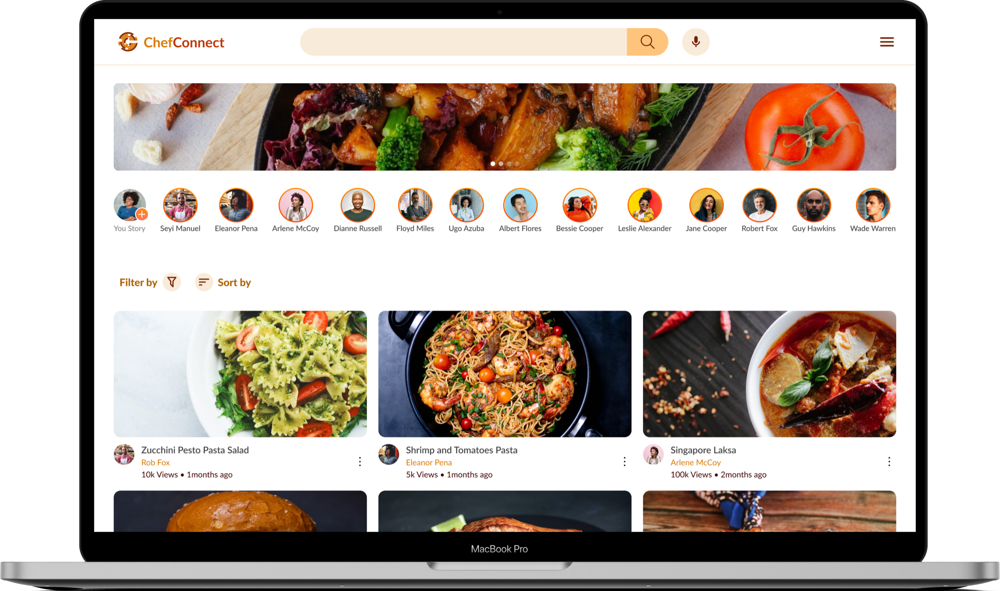

ChefConnect · Culinary Community Web App
A culinary community that finally works for the cooks in it.
ChefConnect is a responsive web app for an online culinary community, where cooking
enthusiasts in Lagos discover, share, and interact around recipes, without the
restrictions of the social platforms they'd outgrown.
My role
Solo Product Designer
Client
Aisha, food vlogger, Lagos
Focus
Community & Responsive Web
Tools
Figma
Coolors.co
Trustpilot
Material.io

Add UI hero → assets/chef-hero.png
01Problem Discovery
Aisha's community lived on platforms built against her.
ChefConnect began with Aisha, a food vlogger in Lagos with a growing Instagram following. She loved cooking and engaging with other enthusiasts, but the social platforms she relied on kept getting in her way, burying her posts, limiting how she could build community, and giving her no real way to earn from her work.
She wanted a space of her own: a web app where she and other food lovers could discover, interact, and share recipes on their own terms. Three problems defined that gap.
01
Content control
Algorithms decided who saw her content, and platform rules limited how she could present it. She had no ownership over her own audience.
02
Limited engagement
Generic social features weren't built for cooks. Real interaction, following, commenting, sharing recipes, was shallow and hard to sustain.
03
Monetization challenges
There was no straightforward way to turn a loyal audience into income from the content she was already creating every week.
The goal
Design a responsive web app for an online culinary community in Lagos, Nigeria, fostering connection, culinary creativity, and personal growth within a supportive, engaging environment.
Three directions to solve for
Interactive engagement
- Follow, share, comment, like, and save recipes.
- Discussion forums, comment sections, and live chat.
- Gamification, badges and rewards, to spark participation.
Monetization & analytics
- Premium subscriptions, ads, and sponsored content.
- Affiliate links so viewers can buy the tools in a video.
- Analytics on behaviour, engagement, and performance.
Responsive & customizable
- Fully responsive across every major device.
- Accessibility options like dark and light mode.
- Social sign-up and integration (Instagram, Facebook).
02Secondary Research
I read the complaints people had already written.
Using journals, articles, and Trustpilot reviews of existing communities on Instagram, Pinterest, and Facebook, I looked for recurring themes in why people join these spaces and where they fall short. I deliberately set aside pure functionality and integration complaints that fell outside this project's scope.
Recurring themes in the reviews
Intrusive onboarding
Sign-up asked for unnecessary details like date of birth, opting out of communities was hard, and ads were relentless.
Weak discovery
Users struggled to find new communities or search specific topics, especially on Facebook. Search wasn't robust enough.
Notification overload
Too many community notifications, hard to manage and genuinely overwhelming to keep up with.
Buried content
Algorithms hid members' posts, so people felt they were constantly missing relevant updates.
Thin moderation
Offensive content, hate speech, and bullying went unaddressed; moderators felt absent.
Disruptive changes
Frequent feature and UI changes broke people's familiarity with platforms they used daily.
Who I was designing for, by the numbers
To ground the audience, I pulled data on how Nigerians use social platforms, their gender split, and age bands, useful signals for attention span, tone, and technology choices.
Social users (NG)
31.6M
Active, Jan 2023
Gender split
55.3 / 44.7
% male / female
Largest age band
37%
Aged 25 – 34
Next age band
32.8%
Aged 18 – 24
03Competitive Analysis
Everyone did one thing well. Nobody did all three.
I studied three category leaders to see what strong recipe products already got right, and where a community-first, creator-friendly product could differentiate.
Tasty
- High-quality, easy-to-follow video recipes.
- Collections across cuisines and dietary needs.
- Social sharing built in.
Allrecipes
- Personalized recipe recommendations.
- Robust dietary filters and allergy alerts.
- Meal planning and shopping-list generator.
Cookpad
- Large, user-generated recipe database.
- Adjustable serving sizes.
- Active community and forums.
Features I benchmarked
Community
Mobile app
Social integration
Recipe sharing
Notification alerts
Follow users
Save recipe
Upload videos
Customization
Clean UI
Monetization
The opening: no competitor combined a genuine cooking community with creator monetization and full responsive customization. That intersection became ChefConnect's position.
04Understanding the User
One audience, four things they need to do.
Devices
Desktop · Tablet · Mobile
01
Browse the platform
Explore recipes posted by others, and post their own.
02
Follow, like & comment
Follow fellow enthusiasts and engage with their posts.
03
Save & message
Save recipes and send direct messages to other users.
04
Affiliate links
Add links to the tools in a video and earn from them.
05User Persona
Meet Funmi Davis.
FD
Funmi Davis
Marketing Manager · Lagos
Industry
Commercial Real Estate
Background
A passionate food enthusiast who fell for cooking in college. She grew up watching her grandmother and mother cook from scratch, memories that still shape her. She loves experimenting with diverse cuisines and hunting for unique ingredients at local markets.
Goals & motivations
- Keep improving, master techniques and world cuisines.
- Stay health-conscious with nutritious recipes.
- Connect with a like-minded cooking community.
- Plan and prep efficiently around a busy job.
Challenges
- Balancing a demanding job with her love of cooking.
- Stuck in a culinary rut, cooking the same dishes.
- Making informed dietary and nutrition choices.
06Empathy Map
What Funmi says, thinks, does, and feels.
An empathy map turned everything I'd learned about Funmi into a single, shared view of her mindset.
Says
- "I love trying out new recipes and cooking techniques."
- "Balancing work and my passion for cooking can be overwhelming."
- "I wish I had more time to connect with the cooking community."
- "I'm always on the lookout for healthy, delicious recipes."
Thinks
- "I want to keep improving my cooking skills and knowledge."
- "Finding quick and nutritious recipes is a top priority."
- "Connecting with a food community would be so inspiring."
- "I need a solution that helps me plan meals efficiently."
Does
- Searches the internet and social media for inspiration.
- Tries to plan meals in advance, but often finds it hard.
- Occasionally joins online cooking forums and groups.
- Experiments with new ingredients and techniques.
Feels
- Enthusiastic about cooking and discovering new flavors.
- Overwhelmed by her job and limited free time.
- Excited to connect with fellow enthusiasts.
- Frustrated when she runs out of creative ideas.
07Use Cases → How Might We
Turning Funmi's problems into opportunities.
I reframed each goal as a "How might we," then paired it with a concrete design response, my bridge into ideation.
How might we give Funmi an app to find recipes that improve her cooking skills?
Design response, let her sort and filter recipes by country and cooking tradition.
How might we help Funmi maintain a healthy diet through the recipes on the platform?
Design response, filter recipes by nutritional purpose, lose, maintain, or gain weight.
How might we help Funmi connect with like-minded people?
Design response, let her see other members, like and comment on posts, and get notified when they post a video.
How might we help Funmi organize her cooking and shopping?
Design response, let her print a recipe's ingredients straight into a shopping list.
08User Journey Map
Six stages, from first hearing about it to recommending it.
Onboarding
Goal, find an app to enhance her skills, connect with a community, and plan meals.
Pain, limited time, no recipe variety, no way to connect.
Opportunity, show recipe complexity, add filters, let her join communities.
Initial use
Goal, discover daily recipes, plan weekly meals, generate shopping lists, meet others.
Pain, can't find diverse, healthy recipes or plan meals with them.
Opportunity, dietary filters, a print-to-shopping-list button, friendly forums.
Daily use
Goal, improve skills, gain nutrition knowledge, connect with the community.
Pain, stuck in a rut; wants deeper insight and a way to react to recipes.
Opportunity, advanced tutorials, detailed guides, nutritional info.
Inspiration
Goal, fresh ideas and flavors; cooking for a birthday gathering.
Pain, feels uninspired; needs quick new ideas for the occasion.
Opportunity, a new-recipe category with curated, top-rated, trending content.
Achievement
Goal, culinary growth and a healthy lifestyle with meals she enjoys.
Pain, balancing work and cooking; unsure about dietary choices.
Opportunity, progress tracking, plus clear nutrition and health cues.
Advocacy
Goal, become a loyal user, recommend it, and help others in the community.
Pain, little motivation to refer; missed chances for involvement.
Opportunity, referral gift cards and prompts to contribute.
09Card Sorting → Information Architecture
A structure users could actually navigate.
Card sorting turned the feature set into eight clear navigation areas, each with its own logical sub-structure.
Search
By user · By recipe · By category
Communities
Vegan · Healthy living · Baking
Notifications
Today · Yesterday · Week · Month
Profile
Edit · Settings & privacy · Logout
10User Flow
One path, mapped end to end.
The core flow traces how Funmi would launch the app, sign in, browse all recipes, filter and select one, then watch, like, and comment, and join a community, from a single entry point.
Launch→
Logged in?→
Sign up / Sign in→
Main page→
All recipes→
Filter & select→
Recipe video→
Like · Save · Comment · Share→
Join community

Add user-flow diagram → assets/chef-userflow.png
11Sketches → Wireframes
From pen and paper to digital wireframes.
I started with low-fidelity pen sketches of the join-the-platform flow and key responsive screens, then rebuilt them as digital wireframes in Figma before adding any visual polish.
Digital wireframes

Add wireframes → assets/chef-wireframes.png
12Design System
Warm colors for a warm subject.
To build the hi-fi mockups, I set a system for color, typography, and grid. Cooking is warmth, appetite, and comfort, so the palette leans into warm reds and oranges grounded by earthy and neutral tones.
Mahogany
#BF3604 · Warm Red
Mustard Brown
#D97904 · Warm Orange
Dark Chocolate
#400101 · Earthy Brown
Chinese Black
#111111 · Ink
Typography
Lato
A versatile, highly readable sans-serif that matched the brand's friendly, modern personality. I leaned on bold and semibold weights to stay legible for users with low vision.
Grid
- Large screen, 12 columns · 70px margin · 20px gutter.
- Tablet, 12 columns · 32px margin · 20px gutter.
- Mobile, 4 columns · 20px margin · 20px gutter.
13UI Design · ChefConnect
Where the research becomes a product.
From the wireframes, I built the responsive interface around the tasks that mattered most, sign up and onboard, browse the home feed, filter and sort recipes, open a recipe to watch, save, share, print, or comment, follow other cooks, and join communities.
Authentication
Responsive sign-up with username, email, phone, and password, or Google, Instagram, and Facebook. Users are nudged to set up a profile (photo, short bio, country, gender) but can skip and finish later. Login supports credentials or a linked social account.

Add authentication screens → assets/chef-auth.png
Home feed
Once registered, users land on a home page full of recipes posted by the community, directly answering "how might we help her find recipes that improve her cooking skills."

Add home feed → assets/chef-home.png
Recipe view
Opening a recipe reveals the video, ingredient list, and nutritional values, with actions to like, share, print, comment, and follow the creator, solving both the healthy-diet and shopping-list "how might we"s at once.

Add recipe view → assets/chef-recipe.png
Community page
From the menu, users open a community, say, Vegan, to see its members and videos, and browse its about and membership details, answering the "connect with like-minded people" goal.

Add community page → assets/chef-community.png
Light & dark themes
An accessibility-minded appearance switch lets users move from a daylight theme to a dark one across the app.

Add light/dark screens → assets/chef-darkmode.png
14Prototype
See it in motion.
The full interactive flow lives in Figma, with walkthroughs mirrored on video. Add your links below.
15Reflection & Next Steps
What I'd validate, and what I'd watch.
With more time, I'd close the loop with real users, A/B and usability testing via surveys, one-on-one interviews, and in-app feedback, then prioritize changes by impact and feasibility with the development team.
KPIs I'd track
- User engagement
- Time on task
- Drop-off rates
- System Usability Scale (SUS)
Risks & responses
- Standing out, AI recommendations, user-generated challenges, and creator partnerships.
- Slow loading (video-heavy), image/code optimization, caching, and CDNs.
- Accessibility, dark/light themes, screen-reader support, and tooltips.
- Onboarding, guided walkthroughs and progressive tooltips.
- Security, encryption, authentication, and regular audits.
- Content control, a review team to uphold quality and policy.